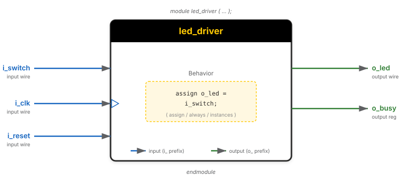

Dr. Mike Borowczak · Electrical & Computer Engineering · CECS · UCF
HDL ≠ SoftwareSynth vs SimModule AnatomyLogic Refresher
The Module: Verilog's Building Block
Every Verilog design is composed of modules.
Think of a module as a chip on a circuit board with labeled pins.
You define what goes in, what comes out, and what happens inside.

⚠️ If You're Thinking Like a Programmer…
❌ Wrong Model
“input and output are like function parameters.
Data ‘flows in’ through input ports when I
‘call’ the module.”
✓ Right Model
Module ports are physical pins on a chip-shaped
abstraction. input ports are pins pulled by external wires;
output ports are pins driven by internal logic. There's no
“call” — the module is always active, like a DIP package soldered
onto a board.
Consequence: There's no return value. Every value the module
produces comes out of a named output port. Multi-output modules
are the norm, not the exception.
These prefixes are a course convention, not a language requirement.
You can always tell at a glance whether a signal is an input, output, register, or wire.
▶ LIVE DEMO
Build a Module from Scratch
Starting from an empty file → day01_ex01_led_driver.v
module → ports → assign → endmodule
Common Error #1: The Missing Semicolon
module my_module (
input wire a,
output wire y
) // ← MISSING SEMICOLON
assign y = a;
endmodule
module my_module (
input wire a,
output wire y
); // ← CORRECT
assign y = a;
endmodule
You will make this mistake. The error message won't point to the right line. Now you know what to look for.
Verilog silently truncates or zero-extends when widths don't match.
No error — just quiet data loss. We'll cover this in detail on Topic 2.
▶ LIVE DEMO
day01_ex02_button_logic.v
Multiple gates — concurrent assign statements
Direct → NOT → AND → XOR · all operating simultaneously
🤖 Check the Machine
Ask an AI assistant:
“What happens if I declare a signal as output reg but
then drive it with an assign statement outside the module?”
TASK
Ask about mixing output reg with external assign.
BEFORE
Predict: “Compile error”? “Silent bug”? What's the failure mode?
AFTER
Correct answer: external assign to an output reg is a Verilog error. iverilog catches this.
TAKEAWAY
Compile first, trust the compiler second, verify third. Use iverilog -Wall always.
Key Takeaways
①
Modules are the fundamental building block — inputs, outputs, behavior.
②assign = permanent wire, not a one-time computation.
③
Use ANSI-style ports and consistent naming (i_, o_, r_, w_).
④
Don't forget the semicolon after ); in the port list.
🔗 Transfer
Digital Logic Refresher
Topic 1, Video 4 of 4 · ~8 minutes
▸ WHY THIS MATTERS NEXT
You now have the module skeleton. Video 4 reminds you what goes
inside — the combinational gates (AND, OR, XOR, MUX)
you'll combine to build every combinational circuit in this course.
If this material feels dusty from a prior class, that's fine: think of
it as calibrating the vocabulary we'll use for Weeks 1 and 2.